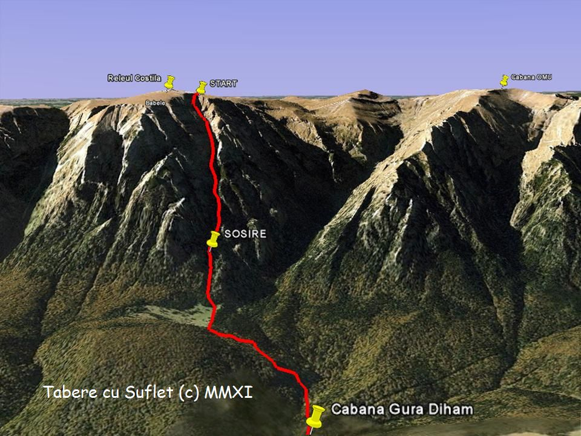
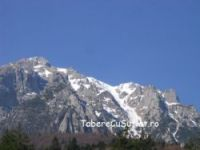
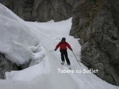
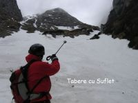
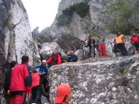

Malinul este una dintre cele mai frumoase Vaii de abrupt din Bucegi. Acesta este unul dintre motivele pentru care, in 1998, am ales aceasta vale pentru primul concurs de freeride din Romania.
 Valea
Punctul de plecare este langa releul Costila, la 2490 m altitudine (45.4289°N 25.4835°E) iar sosirea 1000 m mai jos.
In partea superioara formeaza un amfiteatrului larg, ce cuprinde cele 2 fire, principal si secundar, care se unesc in dreptul Branei Mari a Costilei. In aceasta zona larga ai de unde alege dintre linii, iar tehnica iese in evidenta. Stancile din zona sunt ideale pentru dropuri, unele sarituri fiind de-a dreptul remarcabile de-a lungul timpului.
 De la Brana Mare incepe un prim canion, unde iti este pusa la grea incercare rezistenta. Canionul este stramt si intortocheat, cu portiuni abrupte, inclinate lateral, si uneori impanzit de crevase. Nu e bine sa pici pentru ca intre zapada si perete sunt rimae. Canionul ia sfarsit in Poiana Malinului, la confluenta cu ValeaScorusului – o Poiana larga unde iti mai tragi sufletul. Uneori,cand nu este zapada, concursul se termina aici.
 Din Poiana intram in al doilea canion, ceva mai larg dar dificil, pentru ca si benzina e pe terminate. Daca nu stii sa iti dozezi efortul e de rau. Intr-un an, un monitor antrenat in Elvetia, foarte bun schior, a avut nevoie de resuscitare dupa ce a terminat concursul.
Accesul
Ca sa ajungi pe Vale cel mai comod este sa urci cu cabina din Busteni la Babele. Daca esenin, din cabina se vede pe platou, in dreapata, releul Costila. Acolo trebuie sa ajungi.De la cabina mergi vreo 20-30 min pe poteca spre Omu (marcajulbanda galbena) pana la Cabana lui Manoliu - casuta cu acoperis de tabla de pe tablou, langa releul Salvamont, de unde faci usor dreapta (ora 1400) pe poteca ce urca drept la releu. Poteca urmeaza traseul Liniei Electrice Subpamantene (LES) si este marcata cu stalpidesi pe care scrie LES. Toate reperele astea sunt foarte importante pe vreme de ceata. Platoul Bucegilorte fura rau din lipsa de repere.
Cand ai ajuns la 200 m de releu faci stanga (Nord) si prinzi ultima serpentina a drumului militar de Costila. Daca nu vezi o mare de oameni inseamna ca nu ai nimerit bine sau ca s-a amanat concursul :)
 Retragerea
De obicei concursul se termina deasupra saritorilor finale. De aici, daca e zapada moale, ne schimbam in bocanci. Cea mai dificila saritoare este cea cu Bolovan, aici salvamontul pune corzi si iti intinde o mana de ajutor. Si celalte insa pot fi a pain in the ass. Dupa ce treci de Saritoarea cu Bolovan ajungi intr-o zona plata unde, daca nu ai facut-o inca, iti schimbi bocancii. Urmeaza o urcare anevoioasa pe o poteca de pamant pana deasupra Hornului Pamantos (varianta de urcare), dupa care o coborare abrupta, prin padure, pe Valcelul Poienii (sau Poienitei – asa am vazut ca ii zic unii), pana in Poiana Costilei. Valcelul se poate cobora si pe schiuri pe un fir cu zapada aflat in dreapta.
In Poiana Costilei ne scuturam bine de noroi si o luam pe Drumul Fanului (marcaj banda galbena) pana in drumul de Gura Diham. Din Poiana Costilei exista si o poteca de vanatori care ne scoate direct la Gura Diham. De fapt sunt multe alte variante de retragere, insa va recomand sa mergeti cu cineva care (chiar) stie. Pe vai nu e de joaca.
|